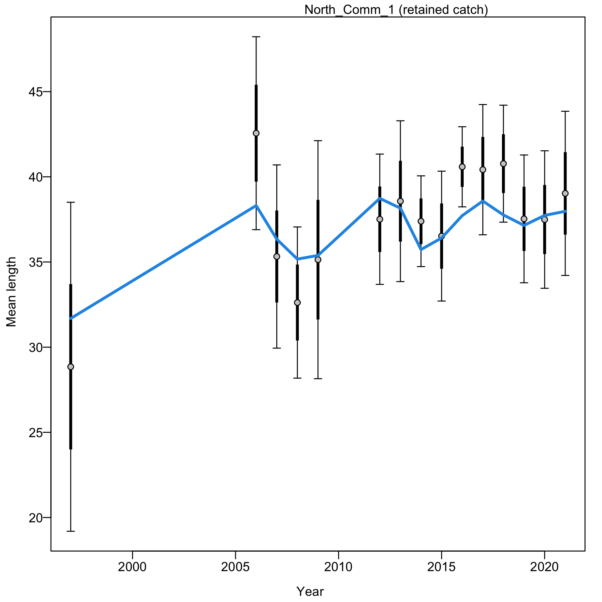
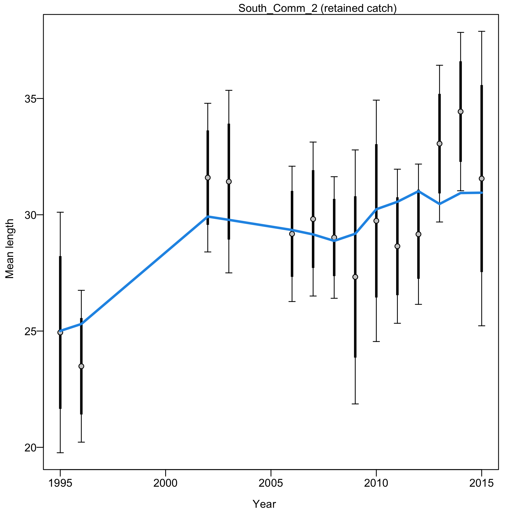
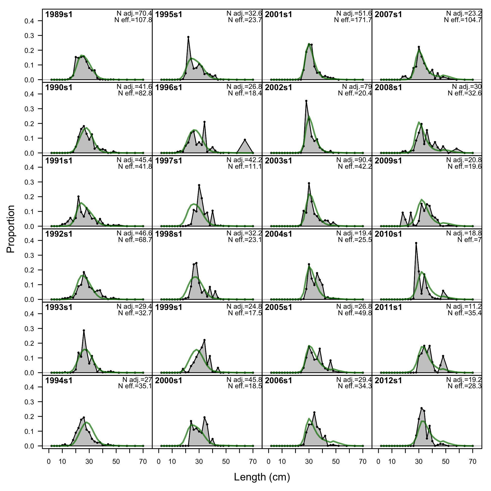
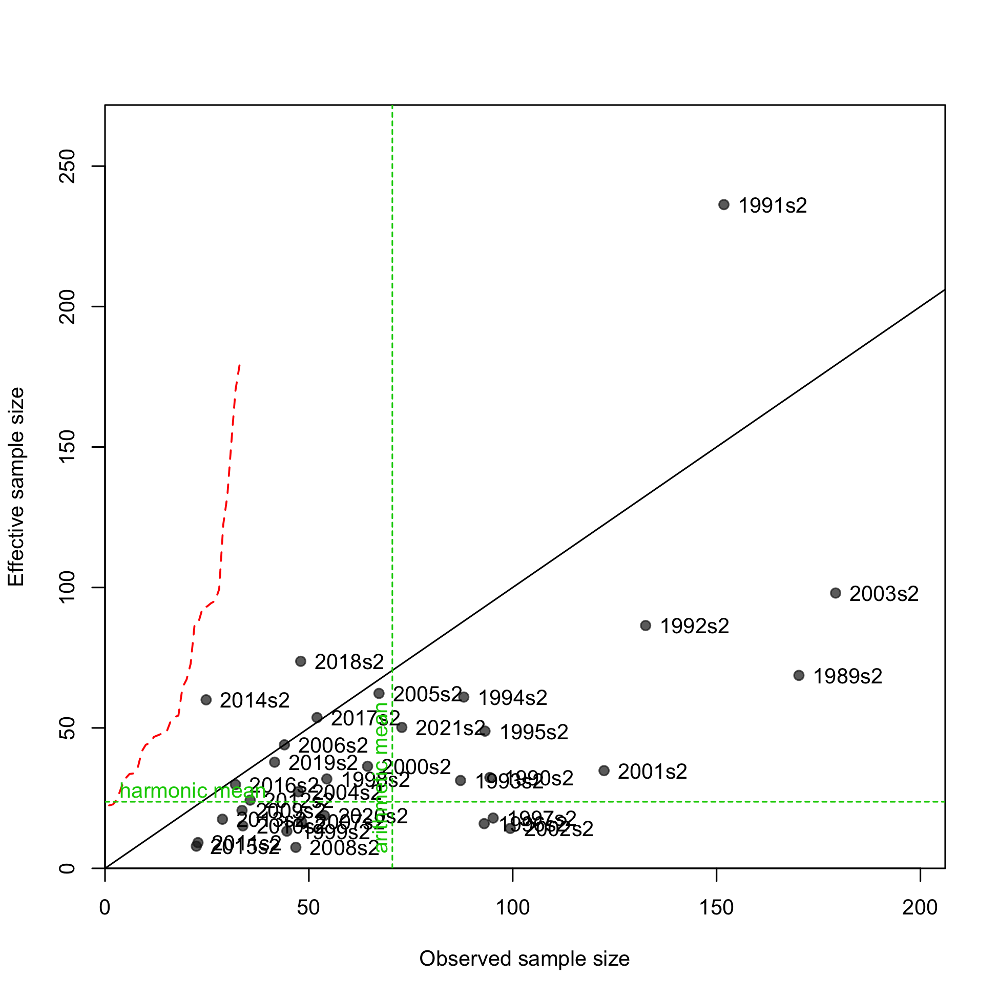
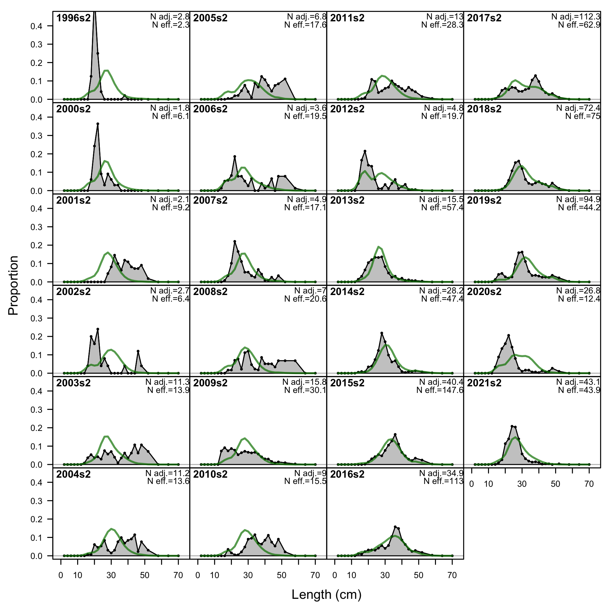
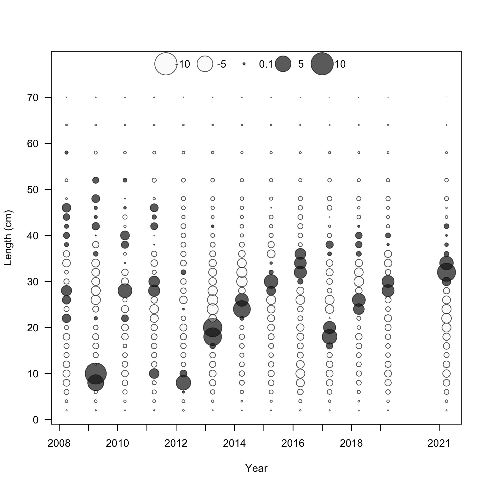
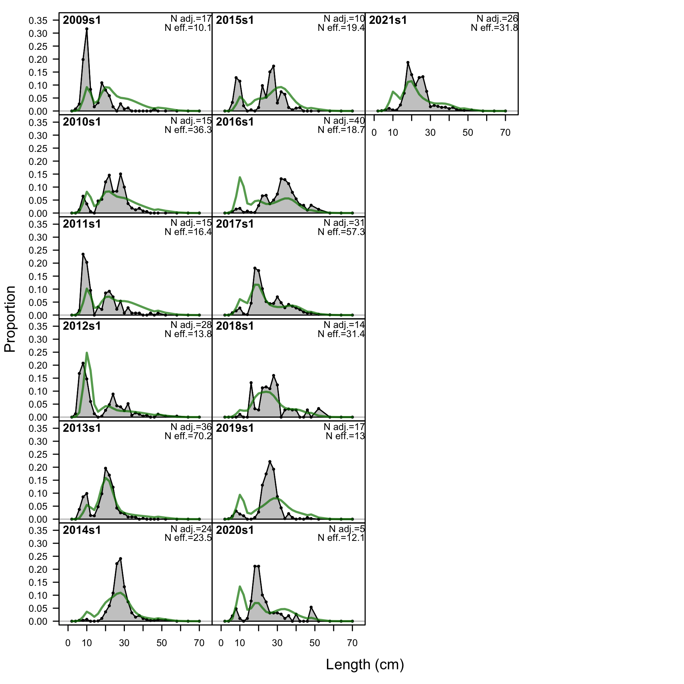
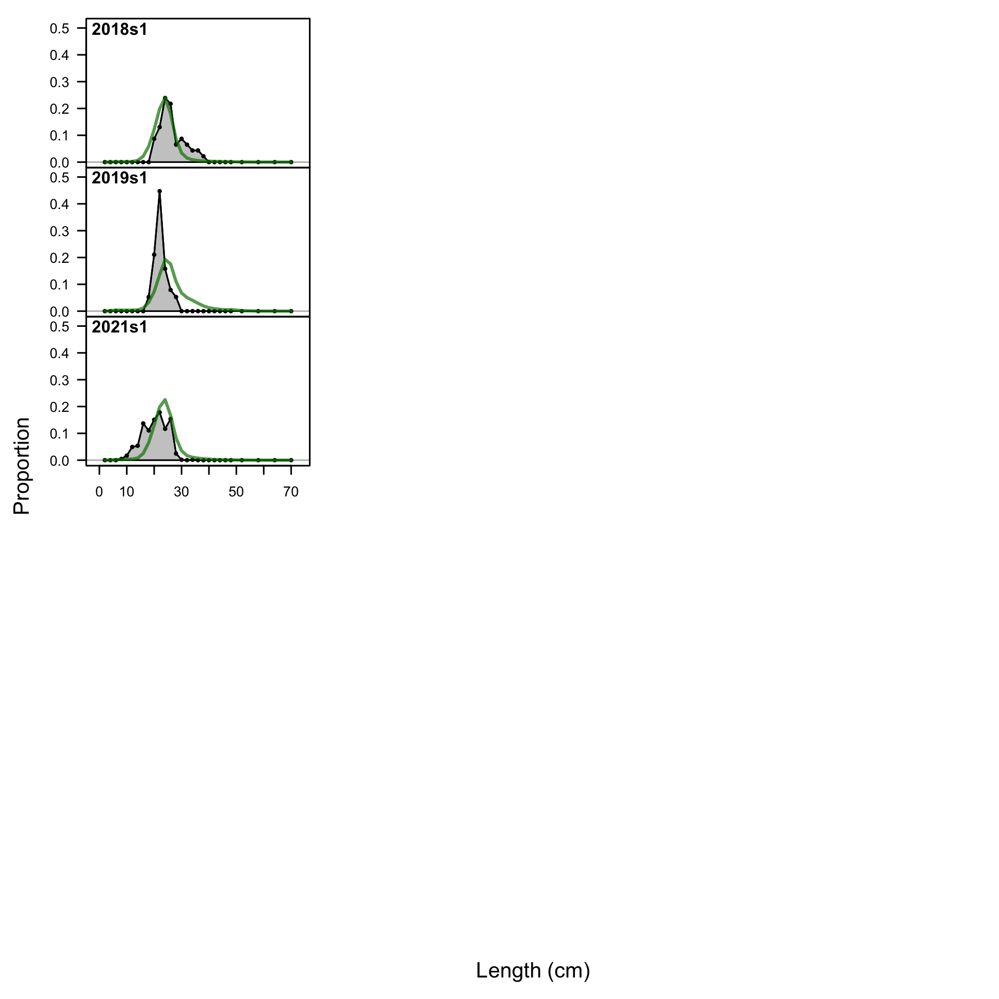

{kind=link}
{kind=link}
{kind=link}
{kind=link}
{kind=link}
{kind=link}
{kind=link}
{kind=link}
{kind=link}
{kind=link}
{kind=link}
{kind=link}
{kind=link}
{kind=link}
{kind=link}

Pearson residuals, retained, North_Comm_2 (max=2.03)
Closed bubbles are positive residuals (observed > expected) and open bubbles are negative residuals (observed < expected).
file: comp_lenfit_residsflt3mkt2.png
Length comps, aggregated across time by fleet.
Labels 'retained' and 'discard' indicate discarded or retained sampled for each fleet. Panels without this designation represent the whole catch.
file: comp_lenfit__aggregated_across_time.png
Pearson residuals, comparing across fleets (plot 1 of 5)
Closed bubbles are positive residuals (observed > expected) and open bubbles are negative residuals (observed < expected).
file: comp_lenfit__page1_multi-fleet_comparison.png
Pearson residuals, comparing across fleets (plot 2 of 5)
file: comp_lenfit__page2_multi-fleet_comparison.png
Pearson residuals, comparing across fleets (plot 3 of 5)
file: comp_lenfit__page3_multi-fleet_comparison.png
Pearson residuals, comparing across fleets (plot 4 of 5)
file: comp_lenfit__page4_multi-fleet_comparison.png
Pearson residuals, comparing across fleets (plot 5 of 5)
file: comp_lenfit__page5_multi-fleet_comparison.png
Length comps, retained, North_Comm_1.
'N adj.' is the input sample size after data-weighting adjustment. N eff. is the calculated effective sample size used in the McAllister-Ianelli tuning method.
file: comp_lenfit_flt1mkt2.png
Pearson residuals, retained, North_Comm_1 (max=3.09)
Closed bubbles are positive residuals (observed > expected) and open bubbles are negative residuals (observed < expected).
file: comp_lenfit_residsflt1mkt2.png
N-EffN comparison, Length comps, retained, North_Comm_1
file: comp_lenfit_sampsize_flt1mkt2.png

Mean length for North_Comm_1 with 95% confidence intervals based on current sample sizes.
Francis data weighting method TA1.8: thinner intervals (with capped ends) show result of further adjusting sample sizes based on suggested multiplier (with 95% interval) for len data from North_Comm_1:
0.2524 (0.1648-0.6079)
For more info, see Francis (2011).
file: comp_lenfit_data_weighting_TA1.8_North_Comm_1.png
Length comps, retained, South_Comm_1.
'N adj.' is the input sample size after data-weighting adjustment. N eff. is the calculated effective sample size used in the McAllister-Ianelli tuning method.
file: comp_lenfit_flt2mkt2.png
Pearson residuals, retained, South_Comm_1 (max=5.2)
Closed bubbles are positive residuals (observed > expected) and open bubbles are negative residuals (observed < expected).
file: comp_lenfit_residsflt2mkt2.png
N-EffN comparison, Length comps, retained, South_Comm_1
file: comp_lenfit_sampsize_flt2mkt2.png
Mean length for South_Comm_1 with 95% confidence intervals based on current sample sizes.
Francis data weighting method TA1.8: thinner intervals (with capped ends) show result of further adjusting sample sizes based on suggested multiplier (with 95% interval) for len data from South_Comm_1:
0.0904 (0.0599-0.2199)
For more info, see Francis (2011).
file: comp_lenfit_data_weighting_TA1.8_South_Comm_1.png
Length comps, retained, North_Comm_2.
'N adj.' is the input sample size after data-weighting adjustment. N eff. is the calculated effective sample size used in the McAllister-Ianelli tuning method.
file: comp_lenfit_flt3mkt2.png
Pearson residuals, retained, North_Comm_2 (max=2.03)
Closed bubbles are positive residuals (observed > expected) and open bubbles are negative residuals (observed < expected).
file: comp_lenfit_residsflt3mkt2.png
N-EffN comparison, Length comps, retained, North_Comm_2
file: comp_lenfit_sampsize_flt3mkt2.png
Mean length for North_Comm_2 with 95% confidence intervals based on current sample sizes.
Francis data weighting method TA1.8: thinner intervals (with capped ends) show result of further adjusting sample sizes based on suggested multiplier (with 95% interval) for len data from North_Comm_2:
0.3051 (0.2131-2.0357)
For more info, see Francis (2011).
file: comp_lenfit_data_weighting_TA1.8_North_Comm_2.png
Length comps, retained, South_Comm_2.
'N adj.' is the input sample size after data-weighting adjustment. N eff. is the calculated effective sample size used in the McAllister-Ianelli tuning method.
file: comp_lenfit_flt4mkt2.png

Pearson residuals, retained, South_Comm_2 (max=3.6)
Closed bubbles are positive residuals (observed > expected) and open bubbles are negative residuals (observed < expected).
file: comp_lenfit_residsflt4mkt2.png
N-EffN comparison, Length comps, retained, South_Comm_2
file: comp_lenfit_sampsize_flt4mkt2.png

Mean length for South_Comm_2 with 95% confidence intervals based on current sample sizes.
Francis data weighting method TA1.8: thinner intervals (with capped ends) show result of further adjusting sample sizes based on suggested multiplier (with 95% interval) for len data from South_Comm_2:
0.4034 (0.2588-0.985)
For more info, see Francis (2011).
file: comp_lenfit_data_weighting_TA1.8_South_Comm_2.png
Length comps, retained, North_Rec_1 (plot 1 of 2).
'N adj.' is the input sample size after data-weighting adjustment. N eff. is the calculated effective sample size used in the McAllister-Ianelli tuning method.
file: comp_lenfit_flt5mkt2_page1.png
Length comps, retained, North_Rec_1 (plot 1 of 2).
'N adj.' is the input sample size after data-weighting adjustment. N eff. is the calculated effective sample size used in the McAllister-Ianelli tuning method. (plot 2 of 2)
file: comp_lenfit_flt5mkt2_page2.png

Pearson residuals, retained, North_Rec_1 (max=219.37) (plot 2 of 2)
Closed bubbles are positive residuals (observed > expected) and open bubbles are negative residuals (observed < expected).
file: comp_lenfit_residsflt5mkt2_page2.png
N-EffN comparison, Length comps, retained, North_Rec_1
file: comp_lenfit_sampsize_flt5mkt2.png
Mean length for North_Rec_1 with 95% confidence intervals based on current sample sizes.
Francis data weighting method TA1.8: thinner intervals (with capped ends) show result of further adjusting sample sizes based on suggested multiplier (with 95% interval) for len data from North_Rec_1:
1.9882 (1.3268-3.8495)
For more info, see Francis (2011).
file: comp_lenfit_data_weighting_TA1.8_North_Rec_1.png
Length comps, discard, North_Rec_1.
'N adj.' is the input sample size after data-weighting adjustment. N eff. is the calculated effective sample size used in the McAllister-Ianelli tuning method.
file: comp_lenfit_flt5mkt1.png

Pearson residuals, discard, North_Rec_1 (max=6.32)
Closed bubbles are positive residuals (observed > expected) and open bubbles are negative residuals (observed < expected).
file: comp_lenfit_residsflt5mkt1.png
N-EffN comparison, Length comps, discard, North_Rec_1
file: comp_lenfit_sampsize_flt5mkt1.png
Mean length for North_Rec_1 with 95% confidence intervals based on current sample sizes.
Francis data weighting method TA1.8: thinner intervals (with capped ends) show result of further adjusting sample sizes based on suggested multiplier (with 95% interval) for len data from North_Rec_1:
1.9882 (1.3482-3.7151)
For more info, see Francis (2011).
file: comp_lenfit_data_weighting_TA1.8_North_Rec_1.png

Length comps, retained, South_Rec_1 (plot 1 of 2).
'N adj.' is the input sample size after data-weighting adjustment. N eff. is the calculated effective sample size used in the McAllister-Ianelli tuning method.
file: comp_lenfit_flt6mkt2_page1.png
Length comps, retained, South_Rec_1 (plot 1 of 2).
'N adj.' is the input sample size after data-weighting adjustment. N eff. is the calculated effective sample size used in the McAllister-Ianelli tuning method. (plot 2 of 2)
file: comp_lenfit_flt6mkt2_page2.png

Pearson residuals, retained, South_Rec_1 (max=135.82) (plot 2 of 2)
Closed bubbles are positive residuals (observed > expected) and open bubbles are negative residuals (observed < expected).
file: comp_lenfit_residsflt6mkt2_page2.png
N-EffN comparison, Length comps, retained, South_Rec_1
file: comp_lenfit_sampsize_flt6mkt2.png
Mean length for South_Rec_1 with 95% confidence intervals based on current sample sizes.
Francis data weighting method TA1.8: thinner intervals (with capped ends) show result of further adjusting sample sizes based on suggested multiplier (with 95% interval) for len data from South_Rec_1:
1.4764 (0.8818-4.0563)
For more info, see Francis (2011).
file: comp_lenfit_data_weighting_TA1.8_South_Rec_1.png
Length comps, discard, South_Rec_1 (plot 1 of 2).
'N adj.' is the input sample size after data-weighting adjustment. N eff. is the calculated effective sample size used in the McAllister-Ianelli tuning method.
file: comp_lenfit_flt6mkt1_page1.png
Length comps, discard, South_Rec_1 (plot 1 of 2).
'N adj.' is the input sample size after data-weighting adjustment. N eff. is the calculated effective sample size used in the McAllister-Ianelli tuning method. (plot 2 of 2)
file: comp_lenfit_flt6mkt1_page2.png

Pearson residuals, discard, South_Rec_1 (max=24.34) (plot 2 of 2)
Closed bubbles are positive residuals (observed > expected) and open bubbles are negative residuals (observed < expected).
file: comp_lenfit_residsflt6mkt1_page2.png
N-EffN comparison, Length comps, discard, South_Rec_1
file: comp_lenfit_sampsize_flt6mkt1.png
Mean length for South_Rec_1 with 95% confidence intervals based on current sample sizes.
Francis data weighting method TA1.8: thinner intervals (with capped ends) show result of further adjusting sample sizes based on suggested multiplier (with 95% interval) for len data from South_Rec_1:
1.4764 (0.8686-4.4104)
For more info, see Francis (2011).
file: comp_lenfit_data_weighting_TA1.8_South_Rec_1.png
Length comps, retained, North_Rec_2 (plot 1 of 2).
'N adj.' is the input sample size after data-weighting adjustment. N eff. is the calculated effective sample size used in the McAllister-Ianelli tuning method.
file: comp_lenfit_flt7mkt2_page1.png
Length comps, retained, North_Rec_2 (plot 1 of 2).
'N adj.' is the input sample size after data-weighting adjustment. N eff. is the calculated effective sample size used in the McAllister-Ianelli tuning method. (plot 2 of 2)
file: comp_lenfit_flt7mkt2_page2.png
Pearson residuals, retained, North_Rec_2 (max=15.17) (plot 2 of 2)
Closed bubbles are positive residuals (observed > expected) and open bubbles are negative residuals (observed < expected).
file: comp_lenfit_residsflt7mkt2_page2.png
N-EffN comparison, Length comps, retained, North_Rec_2
file: comp_lenfit_sampsize_flt7mkt2.png
Mean length for North_Rec_2 with 95% confidence intervals based on current sample sizes.
Francis data weighting method TA1.8: thinner intervals (with capped ends) show result of further adjusting sample sizes based on suggested multiplier (with 95% interval) for len data from North_Rec_2:
0.2392 (0.1533-0.4573)
For more info, see Francis (2011).
file: comp_lenfit_data_weighting_TA1.8_North_Rec_2.png
Length comps, discard, North_Rec_2.
'N adj.' is the input sample size after data-weighting adjustment. N eff. is the calculated effective sample size used in the McAllister-Ianelli tuning method.
file: comp_lenfit_flt7mkt1.png
Pearson residuals, discard, North_Rec_2 (max=17.71)
Closed bubbles are positive residuals (observed > expected) and open bubbles are negative residuals (observed < expected).
file: comp_lenfit_residsflt7mkt1.png
N-EffN comparison, Length comps, discard, North_Rec_2
file: comp_lenfit_sampsize_flt7mkt1.png
Mean length for North_Rec_2 with 95% confidence intervals based on current sample sizes.
Francis data weighting method TA1.8: thinner intervals (with capped ends) show result of further adjusting sample sizes based on suggested multiplier (with 95% interval) for len data from North_Rec_2:
0.2392 (0.152-0.4532)
For more info, see Francis (2011).
file: comp_lenfit_data_weighting_TA1.8_North_Rec_2.png

Length comps, retained, South_Rec_2 (plot 1 of 2).
'N adj.' is the input sample size after data-weighting adjustment. N eff. is the calculated effective sample size used in the McAllister-Ianelli tuning method.
file: comp_lenfit_flt8mkt2_page1.png
Length comps, retained, South_Rec_2 (plot 1 of 2).
'N adj.' is the input sample size after data-weighting adjustment. N eff. is the calculated effective sample size used in the McAllister-Ianelli tuning method. (plot 2 of 2)
file: comp_lenfit_flt8mkt2_page2.png
Pearson residuals, retained, South_Rec_2 (max=22.11) (plot 2 of 2)
Closed bubbles are positive residuals (observed > expected) and open bubbles are negative residuals (observed < expected).
file: comp_lenfit_residsflt8mkt2_page2.png

N-EffN comparison, Length comps, retained, South_Rec_2
file: comp_lenfit_sampsize_flt8mkt2.png
Mean length for South_Rec_2 with 95% confidence intervals based on current sample sizes.
Francis data weighting method TA1.8: thinner intervals (with capped ends) show result of further adjusting sample sizes based on suggested multiplier (with 95% interval) for len data from South_Rec_2:
0.3687 (0.2506-0.6729)
For more info, see Francis (2011).
file: comp_lenfit_data_weighting_TA1.8_South_Rec_2.png
Length comps, discard, South_Rec_2 (plot 1 of 2).
'N adj.' is the input sample size after data-weighting adjustment. N eff. is the calculated effective sample size used in the McAllister-Ianelli tuning method.
file: comp_lenfit_flt8mkt1_page1.png

Length comps, discard, South_Rec_2 (plot 1 of 2).
'N adj.' is the input sample size after data-weighting adjustment. N eff. is the calculated effective sample size used in the McAllister-Ianelli tuning method. (plot 2 of 2)
file: comp_lenfit_flt8mkt1_page2.png
Pearson residuals, discard, South_Rec_2 (max=21.75) (plot 2 of 2)
Closed bubbles are positive residuals (observed > expected) and open bubbles are negative residuals (observed < expected).
file: comp_lenfit_residsflt8mkt1_page2.png
N-EffN comparison, Length comps, discard, South_Rec_2
file: comp_lenfit_sampsize_flt8mkt1.png
Mean length for South_Rec_2 with 95% confidence intervals based on current sample sizes.
Francis data weighting method TA1.8: thinner intervals (with capped ends) show result of further adjusting sample sizes based on suggested multiplier (with 95% interval) for len data from South_Rec_2:
0.3687 (0.252-0.6936)
For more info, see Francis (2011).
file: comp_lenfit_data_weighting_TA1.8_South_Rec_2.png
Length comps, discard, North_Comm_1_dlen (plot 1 of 2).
'N adj.' is the input sample size after data-weighting adjustment. N eff. is the calculated effective sample size used in the McAllister-Ianelli tuning method.
file: comp_lenfit_flt16mkt1_page1.png
Length comps, discard, North_Comm_1_dlen (plot 1 of 2).
'N adj.' is the input sample size after data-weighting adjustment. N eff. is the calculated effective sample size used in the McAllister-Ianelli tuning method. (plot 2 of 2)
file: comp_lenfit_flt16mkt1_page2.png
Pearson residuals, discard, North_Comm_1_dlen (max=16.01) (plot 2 of 2)
Closed bubbles are positive residuals (observed > expected) and open bubbles are negative residuals (observed < expected).
file: comp_lenfit_residsflt16mkt1_page2.png
N-EffN comparison, Length comps, discard, North_Comm_1_dlen
file: comp_lenfit_sampsize_flt16mkt1.png
Mean length for North_Comm_1_dlen with 95% confidence intervals based on current sample sizes.
Francis data weighting method TA1.8: thinner intervals (with capped ends) show result of further adjusting sample sizes based on suggested multiplier (with 95% interval) for len data from North_Comm_1_dlen:
0.4249 (0.2816-0.8632)
For more info, see Francis (2011).
file: comp_lenfit_data_weighting_TA1.8_North_Comm_1_dlen.png
Length comps, discard, South_Comm_1_dlen (plot 1 of 2).
'N adj.' is the input sample size after data-weighting adjustment. N eff. is the calculated effective sample size used in the McAllister-Ianelli tuning method.
file: comp_lenfit_flt17mkt1_page1.png
Length comps, discard, South_Comm_1_dlen (plot 1 of 2).
'N adj.' is the input sample size after data-weighting adjustment. N eff. is the calculated effective sample size used in the McAllister-Ianelli tuning method. (plot 2 of 2)
file: comp_lenfit_flt17mkt1_page2.png
Pearson residuals, discard, South_Comm_1_dlen (max=8.85) (plot 2 of 2)
Closed bubbles are positive residuals (observed > expected) and open bubbles are negative residuals (observed < expected).
file: comp_lenfit_residsflt17mkt1_page2.png
N-EffN comparison, Length comps, discard, South_Comm_1_dlen
file: comp_lenfit_sampsize_flt17mkt1.png
Mean length for South_Comm_1_dlen with 95% confidence intervals based on current sample sizes.
Francis data weighting method TA1.8: thinner intervals (with capped ends) show result of further adjusting sample sizes based on suggested multiplier (with 95% interval) for len data from South_Comm_1_dlen:
0.164 (0.1-0.3801)
For more info, see Francis (2011).
file: comp_lenfit_data_weighting_TA1.8_South_Comm_1_dlen.png

Length comps, discard, North_Comm_2_dlen.
'N adj.' is the input sample size after data-weighting adjustment. N eff. is the calculated effective sample size used in the McAllister-Ianelli tuning method.
file: comp_lenfit_flt18mkt1.png
Pearson residuals, discard, North_Comm_2_dlen (max=13.31)
Closed bubbles are positive residuals (observed > expected) and open bubbles are negative residuals (observed < expected).
file: comp_lenfit_residsflt18mkt1.png
N-EffN comparison, Length comps, discard, North_Comm_2_dlen
file: comp_lenfit_sampsize_flt18mkt1.png
Mean length for North_Comm_2_dlen with 95% confidence intervals based on current sample sizes.
Francis data weighting method TA1.8: thinner intervals (with capped ends) show result of further adjusting sample sizes based on suggested multiplier (with 95% interval) for len data from North_Comm_2_dlen:
0.2239 (0.1649-0.3665)
For more info, see Francis (2011).
file: comp_lenfit_data_weighting_TA1.8_North_Comm_2_dlen.png
Length comps, discard, South_Comm_2_dlen (plot 1 of 2).
'N adj.' is the input sample size after data-weighting adjustment. N eff. is the calculated effective sample size used in the McAllister-Ianelli tuning method.
file: comp_lenfit_flt19mkt1_page1.png
Length comps, discard, South_Comm_2_dlen (plot 1 of 2).
'N adj.' is the input sample size after data-weighting adjustment. N eff. is the calculated effective sample size used in the McAllister-Ianelli tuning method. (plot 2 of 2)
file: comp_lenfit_flt19mkt1_page2.png
Pearson residuals, discard, South_Comm_2_dlen (max=13.33) (plot 2 of 2)
Closed bubbles are positive residuals (observed > expected) and open bubbles are negative residuals (observed < expected).
file: comp_lenfit_residsflt19mkt1_page2.png
N-EffN comparison, Length comps, discard, South_Comm_2_dlen
file: comp_lenfit_sampsize_flt19mkt1.png
Mean length for South_Comm_2_dlen with 95% confidence intervals based on current sample sizes.
Francis data weighting method TA1.8: thinner intervals (with capped ends) show result of further adjusting sample sizes based on suggested multiplier (with 95% interval) for len data from South_Comm_2_dlen:
0.1613 (0.0922-0.4223)
For more info, see Francis (2011).
file: comp_lenfit_data_weighting_TA1.8_South_Comm_2_dlen.png
Length comps, whole catch, North_NEAMAP_1.
'N adj.' is the input sample size after data-weighting adjustment. N eff. is the calculated effective sample size used in the McAllister-Ianelli tuning method.
file: comp_lenfit_flt20mkt0.png

Pearson residuals, whole catch, North_NEAMAP_1 (max=9.01)
Closed bubbles are positive residuals (observed > expected) and open bubbles are negative residuals (observed < expected).
file: comp_lenfit_residsflt20mkt0.png
N-EffN comparison, Length comps, whole catch, North_NEAMAP_1
file: comp_lenfit_sampsize_flt20mkt0.png
Mean length for North_NEAMAP_1 with 95% confidence intervals based on current sample sizes.
Francis data weighting method TA1.8: thinner intervals (with capped ends) show result of further adjusting sample sizes based on suggested multiplier (with 95% interval) for len data from North_NEAMAP_1:
0.1168 (0.075-0.2989)
For more info, see Francis (2011).
file: comp_lenfit_data_weighting_TA1.8_North_NEAMAP_1.png
Length comps, whole catch, South_NEAMAP_1.
'N adj.' is the input sample size after data-weighting adjustment. N eff. is the calculated effective sample size used in the McAllister-Ianelli tuning method.
file: comp_lenfit_flt21mkt0.png
Pearson residuals, whole catch, South_NEAMAP_1 (max=8.06)
Closed bubbles are positive residuals (observed > expected) and open bubbles are negative residuals (observed < expected).
file: comp_lenfit_residsflt21mkt0.png
N-EffN comparison, Length comps, whole catch, South_NEAMAP_1
file: comp_lenfit_sampsize_flt21mkt0.png
Mean length for South_NEAMAP_1 with 95% confidence intervals based on current sample sizes.
Francis data weighting method TA1.8: thinner intervals (with capped ends) show result of further adjusting sample sizes based on suggested multiplier (with 95% interval) for len data from South_NEAMAP_1:
0.6114 (0.3234-2.1364)
For more info, see Francis (2011).
file: comp_lenfit_data_weighting_TA1.8_South_NEAMAP_1.png
Length comps, whole catch, North_NEAMAP_2.
'N adj.' is the input sample size after data-weighting adjustment. N eff. is the calculated effective sample size used in the McAllister-Ianelli tuning method.
file: comp_lenfit_flt22mkt0.png
Pearson residuals, whole catch, North_NEAMAP_2 (max=6.49)
Closed bubbles are positive residuals (observed > expected) and open bubbles are negative residuals (observed < expected).
file: comp_lenfit_residsflt22mkt0.png
N-EffN comparison, Length comps, whole catch, North_NEAMAP_2
file: comp_lenfit_sampsize_flt22mkt0.png
Mean length for North_NEAMAP_2 with 95% confidence intervals based on current sample sizes.
Francis data weighting method TA1.8: thinner intervals (with capped ends) show result of further adjusting sample sizes based on suggested multiplier (with 95% interval) for len data from North_NEAMAP_2:
0.1525 (0.0977-0.3765)
For more info, see Francis (2011).
file: comp_lenfit_data_weighting_TA1.8_North_NEAMAP_2.png
Length comps, whole catch, South_NEAMAP_2.
'N adj.' is the input sample size after data-weighting adjustment. N eff. is the calculated effective sample size used in the McAllister-Ianelli tuning method.
file: comp_lenfit_flt23mkt0.png
Pearson residuals, whole catch, South_NEAMAP_2 (max=4.94)
Closed bubbles are positive residuals (observed > expected) and open bubbles are negative residuals (observed < expected).
file: comp_lenfit_residsflt23mkt0.png
N-EffN comparison, Length comps, whole catch, South_NEAMAP_2
file: comp_lenfit_sampsize_flt23mkt0.png
Mean length for South_NEAMAP_2 with 95% confidence intervals based on current sample sizes.
Francis data weighting method TA1.8: thinner intervals (with capped ends) show result of further adjusting sample sizes based on suggested multiplier (with 95% interval) for len data from South_NEAMAP_2:
0.1593 (0.1149-0.3414)
For more info, see Francis (2011).
file: comp_lenfit_data_weighting_TA1.8_South_NEAMAP_2.png
Length comps, whole catch, Albatross_Spring_North.
'N adj.' is the input sample size after data-weighting adjustment. N eff. is the calculated effective sample size used in the McAllister-Ianelli tuning method.
file: comp_lenfit_flt24mkt0.png
Pearson residuals, whole catch, Albatross_Spring_North (max=55.92)
Closed bubbles are positive residuals (observed > expected) and open bubbles are negative residuals (observed < expected).
file: comp_lenfit_residsflt24mkt0.png
N-EffN comparison, Length comps, whole catch, Albatross_Spring_North
file: comp_lenfit_sampsize_flt24mkt0.png
Mean length for Albatross_Spring_North with 95% confidence intervals based on current sample sizes.
Francis data weighting method TA1.8: thinner intervals (with capped ends) show result of further adjusting sample sizes based on suggested multiplier (with 95% interval) for len data from Albatross_Spring_North:
0.8827 (0.6359-1.9211)
For more info, see Francis (2011).
file: comp_lenfit_data_weighting_TA1.8_Albatross_Spring_North.png
Length comps, whole catch, Albatross_Spring_South.
'N adj.' is the input sample size after data-weighting adjustment. N eff. is the calculated effective sample size used in the McAllister-Ianelli tuning method.
file: comp_lenfit_flt25mkt0.png
Pearson residuals, whole catch, Albatross_Spring_South (max=15.03)
Closed bubbles are positive residuals (observed > expected) and open bubbles are negative residuals (observed < expected).
file: comp_lenfit_residsflt25mkt0.png
N-EffN comparison, Length comps, whole catch, Albatross_Spring_South
file: comp_lenfit_sampsize_flt25mkt0.png
Mean length for Albatross_Spring_South with 95% confidence intervals based on current sample sizes.
Francis data weighting method TA1.8: thinner intervals (with capped ends) show result of further adjusting sample sizes based on suggested multiplier (with 95% interval) for len data from Albatross_Spring_South:
0.1989 (0.1168-0.6951)
For more info, see Francis (2011).
file: comp_lenfit_data_weighting_TA1.8_Albatross_Spring_South.png

Length comps, whole catch, Bigelow_Nrth_Spr.
'N adj.' is the input sample size after data-weighting adjustment. N eff. is the calculated effective sample size used in the McAllister-Ianelli tuning method.
file: comp_lenfit_flt26mkt0.png
Pearson residuals, whole catch, Bigelow_Nrth_Spr (max=6.02)
Closed bubbles are positive residuals (observed > expected) and open bubbles are negative residuals (observed < expected).
file: comp_lenfit_residsflt26mkt0.png
N-EffN comparison, Length comps, whole catch, Bigelow_Nrth_Spr
file: comp_lenfit_sampsize_flt26mkt0.png
Mean length for Bigelow_Nrth_Spr with 95% confidence intervals based on current sample sizes.
Francis data weighting method TA1.8: thinner intervals (with capped ends) show result of further adjusting sample sizes based on suggested multiplier (with 95% interval) for len data from Bigelow_Nrth_Spr:
0.2395 (0.1251-0.9284)
For more info, see Francis (2011).
file: comp_lenfit_data_weighting_TA1.8_Bigelow_Nrth_Spr.png
Length comps, whole catch, Bigelow_Sth_Spr.
'N adj.' is the input sample size after data-weighting adjustment. N eff. is the calculated effective sample size used in the McAllister-Ianelli tuning method.
file: comp_lenfit_flt27mkt0.png
Pearson residuals, whole catch, Bigelow_Sth_Spr (max=4.19)
Closed bubbles are positive residuals (observed > expected) and open bubbles are negative residuals (observed < expected).
file: comp_lenfit_residsflt27mkt0.png
N-EffN comparison, Length comps, whole catch, Bigelow_Sth_Spr
file: comp_lenfit_sampsize_flt27mkt0.png
Mean length for Bigelow_Sth_Spr with 95% confidence intervals based on current sample sizes.
Francis data weighting method TA1.8: thinner intervals (with capped ends) show result of further adjusting sample sizes based on suggested multiplier (with 95% interval) for len data from Bigelow_Sth_Spr:
1.2913 (0.7806-3.6119)
For more info, see Francis (2011).
file: comp_lenfit_data_weighting_TA1.8_Bigelow_Sth_Spr.png
Length comps, whole catch, North_Winter_BTS.
'N adj.' is the input sample size after data-weighting adjustment. N eff. is the calculated effective sample size used in the McAllister-Ianelli tuning method.
file: comp_lenfit_flt28mkt0.png
Pearson residuals, whole catch, North_Winter_BTS (max=18.9)
Closed bubbles are positive residuals (observed > expected) and open bubbles are negative residuals (observed < expected).
file: comp_lenfit_residsflt28mkt0.png
N-EffN comparison, Length comps, whole catch, North_Winter_BTS
file: comp_lenfit_sampsize_flt28mkt0.png
Mean length for North_Winter_BTS with 95% confidence intervals based on current sample sizes.
Francis data weighting method TA1.8: thinner intervals (with capped ends) show result of further adjusting sample sizes based on suggested multiplier (with 95% interval) for len data from North_Winter_BTS:
0.2449 (0.1552-0.6325)
For more info, see Francis (2011).
file: comp_lenfit_data_weighting_TA1.8_North_Winter_BTS.png
Length comps, whole catch, South_Winter_BTS.
'N adj.' is the input sample size after data-weighting adjustment. N eff. is the calculated effective sample size used in the McAllister-Ianelli tuning method.
file: comp_lenfit_flt29mkt0.png
Pearson residuals, whole catch, South_Winter_BTS (max=4.69)
Closed bubbles are positive residuals (observed > expected) and open bubbles are negative residuals (observed < expected).
file: comp_lenfit_residsflt29mkt0.png
N-EffN comparison, Length comps, whole catch, South_Winter_BTS
file: comp_lenfit_sampsize_flt29mkt0.png
Mean length for South_Winter_BTS with 95% confidence intervals based on current sample sizes.
Francis data weighting method TA1.8: thinner intervals (with capped ends) show result of further adjusting sample sizes based on suggested multiplier (with 95% interval) for len data from South_Winter_BTS:
0.3724 (0.2058-1.5367)
For more info, see Francis (2011).
file: comp_lenfit_data_weighting_TA1.8_South_Winter_BTS.png
Excluded length comps, discard, North_Comm_1.
'N adj.' is the input sample size after data-weighting adjustment. N eff. is the calculated effective sample size used in the McAllister-Ianelli tuning method.
file: comp_gstlenfit_flt1mkt1.png

Pearson residuals, discard, North_Comm_1 (max=NA)
Closed bubbles are positive residuals (observed > expected) and open bubbles are negative residuals (observed < expected).
file: comp_gstlenfit_residsflt1mkt1.png

Excluded length comps, discard, South_Comm_1.
'N adj.' is the input sample size after data-weighting adjustment. N eff. is the calculated effective sample size used in the McAllister-Ianelli tuning method.
file: comp_gstlenfit_flt2mkt1.png

Pearson residuals, discard, South_Comm_1 (max=NA)
Closed bubbles are positive residuals (observed > expected) and open bubbles are negative residuals (observed < expected).
file: comp_gstlenfit_residsflt2mkt1.png
Excluded length comps, discard, North_Comm_2.
'N adj.' is the input sample size after data-weighting adjustment. N eff. is the calculated effective sample size used in the McAllister-Ianelli tuning method.
file: comp_gstlenfit_flt3mkt1.png

Pearson residuals, discard, North_Comm_2 (max=NA)
Closed bubbles are positive residuals (observed > expected) and open bubbles are negative residuals (observed < expected).
file: comp_gstlenfit_residsflt3mkt1.png
Excluded length comps, discard, South_Comm_2.
'N adj.' is the input sample size after data-weighting adjustment. N eff. is the calculated effective sample size used in the McAllister-Ianelli tuning method.
file: comp_gstlenfit_flt4mkt1.png

Pearson residuals, discard, South_Comm_2 (max=NA)
Closed bubbles are positive residuals (observed > expected) and open bubbles are negative residuals (observed < expected).
file: comp_gstlenfit_residsflt4mkt1.png
{kind=link}
{kind=link}
{kind=link}
{kind=link}
{kind=link}
{kind=link}
{kind=link}
{kind=link}
{kind=link}
{kind=link}
{kind=link}
{kind=link}
{kind=link}
{kind=link}
{kind=link}
{kind=link}
{kind=link}
{kind=link}
{kind=link}
{kind=link}
{kind=link}
{kind=link}
{kind=link}
{kind=link}
{kind=link}
{kind=link}
{kind=link}
{kind=link}
{kind=link}
{kind=link}
{kind=link}
{kind=link}
{kind=link}
{kind=link}
{kind=link}
{kind=link}
{kind=link}
{kind=link}
{kind=link}
{kind=link}
{kind=link}
{kind=link}
{kind=link}
{kind=link}
{kind=link}
{kind=link}
{kind=link}
{kind=link}
{kind=link}
{kind=link}
{kind=link}
{kind=link}
{kind=link}
{kind=link}
{kind=link}
{kind=link}
{kind=link}
{kind=link}
{kind=link}
{kind=link}
{kind=link}
{kind=link}
{kind=link}
{kind=link}
{kind=link}
{kind=link}
{kind=link}
{kind=link}
{kind=link}
{kind=link}
{kind=link}
{kind=link}
{kind=link}
{kind=link}
{kind=link}
{kind=link}
{kind=link}
{kind=link}
{kind=link}
{kind=link}
{kind=link}
{kind=link}
{kind=link}
{kind=link}
{kind=link}
{kind=link}
{kind=link}
{kind=link}
{kind=link}
{kind=link}
{kind=link}
{kind=link}
{kind=link}
{kind=link}
{kind=link}
{kind=link}